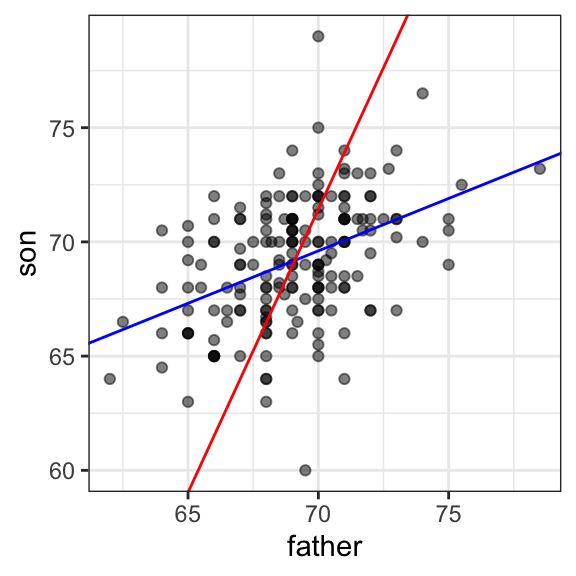
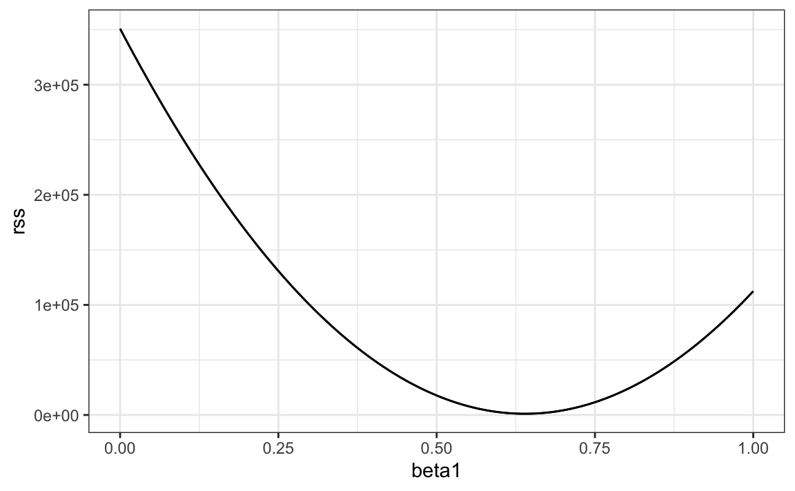
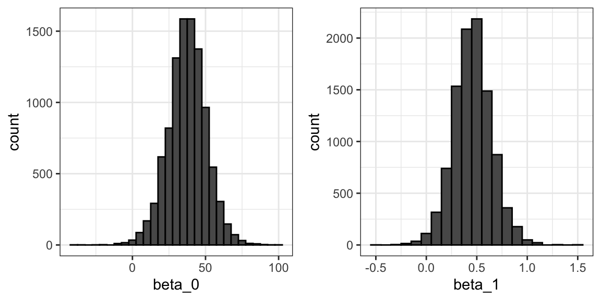
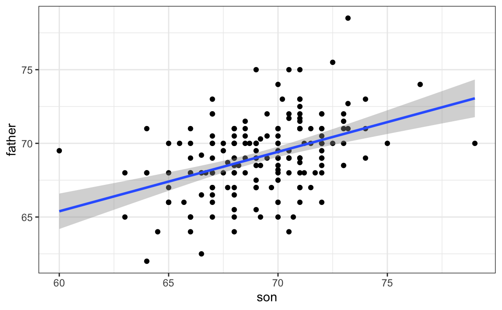

13 Regression
13.1 Case study: is height hereditary?
To understand the concepts of correlation and simple regression we actually use the dataset from which regression was born. The example is from genetics. Francis Galton1 studied the variation and heredity of human traits. Among many other traits, Galton collected and studied height data from families to try to understand heredity. While doing this, he developed the concepts of correlation and regression, as well as a connection to pairs of data that follow a normal distribution. Of course, at the time this data was collected our knowledge of genetics was quite limited compared to what we know today. A very specific question Galton tried to answer was: how well can we predict a child’s height based on the parents’ height? The technique he developed to answer this question, regression, can also be applied to our baseball question. Regression can be applied in many other circumstances as well.
Galton made important contributions to statistics and genetics, but he was also one of the first proponents of eugenics, a scientifically flawed philosophical movement favored by many biologists of Galton’s time but with horrific historical consequences. You can read more about it here: https://pged.org/history-eugenics-and-genetics/.
We have access to Galton’s family height data through the HistData package. This data contains heights on several dozen families: mothers, fathers, daughters, and sons. To imitate Galton’s analysis, we will create a dataset with the heights of fathers and a randomly selected son of each family:
Suppose we were asked to summarize the father and son data. Since both distributions are well approximated by the normal distribution, we could use the two averages and two standard deviations as summaries:
However, this summary fails to describe an important characteristic of the data: the trend that the taller the father, the taller the son.
galton_heights |> ggplot(aes(father, son)) +
geom_point(alpha = 0.5)We will learn that the correlation coefficient is an informative summary of how two variables move together and then motivate simple regression by noting how this can be used to predict one variable using the other.
13.2 The correlation coefficient
The correlation coefficient is defined for a list of pairs \((x_1, y_1), \dots, (x_n,y_n)\) as the average of the product of the standardized values:
\[ \rho = \frac{1}{n} \sum_{i=1}^n \left( \frac{x_i-\mu_x}{\sigma_x} \right)\left( \frac{y_i-\mu_y}{\sigma_y} \right) \]
with \(\mu_x, \mu_y\) the averages of \(x_1,\dots, x_n\) and \(y_1, \dots, y_n\), respectively, and \(\sigma_x, \sigma_y\) the standard deviations. The Greek letter \(\rho\) is commonly used in statistics books to denote the correlation. The Greek letter for \(r\), \(\rho\), because it is the first letter of regression. Soon we learn about the connection between correlation and regression. We can represent the formula above with R code using:
To understand why this equation does in fact summarize how two variables move together, consider the \(i\)-th entry of \(x\) is \(\left( \frac{x_i-\mu_x}{\sigma_x} \right)\) SDs away from the average. Similarly, the \(y_i\) that is paired with \(x_i\), is \(\left( \frac{y_1-\mu_y}{\sigma_y} \right)\) SDs away from the average \(y\). If \(x\) and \(y\) are unrelated, the product \(\left( \frac{x_i-\mu_x}{\sigma_x} \right)\left( \frac{y_i-\mu_y}{\sigma_y} \right)\) will be positive ( \(+ \times +\) and \(- \times -\) ) as often as negative (\(+ \times -\) and \(- \times +\)) and will average out to about 0. This correlation is the average and therefore unrelated variables will have 0 correlation. If instead the quantities vary together, then we are averaging mostly positive products ( \(+ \times +\) and \(- \times -\)) and we get a positive correlation. If they vary in opposite directions, we get a negative correlation.
The correlation coefficient is always between -1 and 1. We can show this mathematically: consider that we can’t have higher correlation than when we compare a list to itself (perfect correlation) and in this case the correlation is:
\[ \rho = \frac{1}{n} \sum_{i=1}^n \left( \frac{x_i-\mu_x}{\sigma_x} \right)^2 = \frac{1}{\sigma_x^2} \frac{1}{n} \sum_{i=1}^n \left( x_i-\mu_x \right)^2 = \frac{1}{\sigma_x^2} \sigma^2_x = 1 \]
A similar derivation, but with \(x\) and its exact opposite, proves the correlation has to be bigger or equal to -1.
For other pairs, the correlation is in between -1 and 1. The correlation, computed with the function cor, between father and son’s heights is about 0.5:
For reasons similar to those explained in Section Section 10.2.1 for the standard deviation, cor(x,y) divides by length(x)-1 rather than length(x).
To see what data looks like for different values of \(\rho\), here are six examples of pairs with correlations ranging from -0.9 to 0.99:

13.2.1 Sample correlation is a random variable
Before we continue connecting correlation to regression, let’s remind ourselves about random variability.
In most data science applications, we observe data that includes random variation. For example, in many cases, we do not observe data for the entire population of interest but rather for a random sample. As with the average and standard deviation, the sample correlation is the most commonly used estimate of the population correlation. This implies that the correlation we compute and use as a summary is a random variable.
By way of illustration, let’s assume that the 179 pairs of fathers and sons is our entire population. A less fortunate geneticist can only afford measurements from a random sample of 25 pairs. The sample correlation can be computed with:
R is a random variable. We can run a Monte Carlo simulation to see its distribution:
B <- 1000
N <- 25
R <- replicate(B, {
sample_n(galton_heights, N, replace = TRUE) |>
summarize(r = cor(father, son)) |>
pull(r)
})
hist(R, breaks = 20)
We see that the expected value of R is the population correlation:
mean(R)
#> [1] 0.431and that it has a relatively high standard error relative to the range of values R can take:
sd(R)
#> [1] 0.161So, when interpreting correlations, remember that correlations derived from samples are estimates containing uncertainty.
Also, note that because the sample correlation is an average of independent draws, the central limit actually applies. Therefore, for large enough \(N\), the distribution of R is approximately normal with expected value \(\rho\). The standard deviation, which is somewhat complex to derive, is \(\sqrt{\frac{1-r^2}{N-2}}\).
In our example, \(N=25\) does not seem to be large enough to make the approximation a good one:
ggplot(aes(sample = R), data = data.frame(R)) +
stat_qq() +
geom_abline(intercept = mean(R), slope = sqrt((1 - mean(R)^2)/(N - 2)))
If you increase \(N\), you will see the distribution converging to normal.
13.2.2 Correlation is not always a useful summary
Correlation is not always a good summary of the relationship between two variables. The following four artificial datasets, referred to as Anscombe’s quartet, famously illustrate this point. All these pairs have a correlation of 0.82:
#> `geom_smooth()` using formula = 'y ~ x'
Correlation is only meaningful in a particular context. To help us understand when it is that correlation is meaningful as a summary statistic, we will return to the example of predicting a son’s height using his father’s height. This will help motivate and define linear regression. We start by demonstrating how correlation can be useful for prediction.
13.3 Conditional expectations
Suppose we are asked to guess the height of a randomly selected son and we don’t know his father’s height. Because the distribution of sons’ heights is approximately normal, we know the average height, 69.2, is the value with the highest proportion and would be the prediction with the highest chance of minimizing the error. But what if we are told that the father is taller than average, say 72 inches tall, do we still guess 69.2 for the son?
It turns out that if we were able to collect data from a very large number of fathers that are 72 inches, the distribution of their sons’ heights would be normally distributed. This implies that the average of the distribution computed on this subset would be our best prediction.
In general, we call this approach conditioning. The general idea is that we stratify a population into groups and compute summaries in each group. To provide a mathematical description of conditioning, consider we have a population of pairs of values \((x_1,y_1),\dots,(x_n,y_n)\), for example all father and son heights in England. In the previous chapter we learned that if you take a random pair \((X,Y)\), the expected value and best predictor of \(Y\) is \(\mbox{E}(Y) = \mu_y\), the population average \(1/n\sum_{i=1}^n y_i\). However, we are no longer interested in the general population, instead we are interested in only the subset of a population with a specific \(x_i\) value, 72 inches in our example. This subset of the population, is also a population and thus the same principles and properties we have learned apply. The \(y_i\) in the subpopulation have a distribution, referred to as the conditional distribution, and this distribution has an expected value referred to as the conditional expectation. In our example, the conditional expectation is the average height of all sons in England with fathers that are 72 inches. The statistical notation for the conditional expectation is
\[ \mbox{E}(Y \mid X = x) \]
with \(x\) representing the fixed value that defines that subset, for example 72 inches. Similarly, we denote the standard deviation of the strata with
\[ \mbox{SD}(Y \mid X = x) = \sqrt{\mbox{Var}(Y \mid X = x)} \]
Because the conditional expectation \(E(Y\mid X=x)\) is the best predictor for the random variable \(Y\) for an individual in the strata defined by \(X=x\), many data science challenges reduce to estimating this quantity. The conditional standard deviation quantifies the precision of the prediction.
In the example we have been considering, we are interested in computing the average son height conditioned on the father being 72 inches tall. We want to estimate \(E(Y|X=72)\) using the sample collected by Galton. We previously learned that the sample average is the preferred approach to estimating the population average. However, a challenge when using this approach to estimating conditional expectations is that for continuous data we don’t have many data points matching exactly one value in our sample. For example, we have only:
sum(galton_heights$father == 72)
#> [1] 8fathers that are exactly 72-inches. If we change the number to 72.5, we get even fewer data points:
sum(galton_heights$father == 72.5)
#> [1] 1A practical way to improve these estimates of the conditional expectations, is to define strata of with similar values of \(x\). In our example, we can round father heights to the nearest inch and assume that they are all 72 inches. If we do this, we end up with the following prediction for the son of a father that is 72 inches tall:
Note that a 72-inch father is taller than average – specifically, (72.0 - 69.1)/2.5 = 1.1 standard deviations taller than the average father. Our prediction 70.5 is also taller than average, but only 0.49 standard deviations larger than the average son. The sons of 72-inch fathers have regressed some to the average height. We notice that the reduction in how many SDs taller is about 0.5, which happens to be the correlation. As we will see in a later section, this is not a coincidence.
If we want to make a prediction of any height, not just 72, we could apply the same approach to each strata. Stratification followed by boxplots lets us see the distribution of each group:
galton_heights |> mutate(father_strata = factor(round(father))) |>
ggplot(aes(father_strata, son)) +
geom_boxplot() +
geom_point()Not surprisingly, the centers of the groups are increasing with height. Furthermore, these centers appear to follow a linear relationship. Below we plot the averages of each group. If we take into account that these averages are random variables with standard errors, the data is consistent with these points following a straight line:
The fact that these conditional averages follow a line is not a coincidence. In the next section, we explain that the line these averages follow is what we call the regression line, which improves the precision of our estimates. However, it is not always appropriate to estimate conditional expectations with the regression line so we also describe Galton’s theoretical justification for using the regression line.
13.4 The regression line
If we are predicting a random variable \(Y\) knowing the value of another \(X=x\) using a regression line, then we predict that for every standard deviation, \(\sigma_X\), that \(x\) increases above the average \(\mu_X\), our prediction \(\hat{Y}\) increase \(\rho\) standard deviations \(\sigma_Y\) above the average \(\mu_Y\) with \(\rho\) the correlation between \(X\) and \(Y\). The formula for the regression is therefore:
\[ \left( \frac{\hat{Y}-\mu_Y}{\sigma_Y} \right) = \rho \left( \frac{x-\mu_X}{\sigma_X} \right) \]
We can rewrite it like this:
\[ \hat{Y} = \mu_Y + \rho \left( \frac{x-\mu_X}{\sigma_X} \right) \sigma_Y \]
If there is perfect correlation, the regression line predicts an increase that is the same number of SDs. If there is 0 correlation, then we don’t use \(x\) at all for the prediction and simply predict the average \(\mu_Y\). For values between 0 and 1, the prediction is somewhere in between. If the correlation is negative, we predict a reduction instead of an increase.
Note that if the correlation is positive and lower than 1, our prediction is closer, in standard units, to the average height than the value used to predict, \(x\), is to the average of the \(x\)s. This is why we call it regression: the son regresses to the average height. In fact, the title of Galton’s paper was: Regression toward mediocrity in hereditary stature. To add regression lines to plots, we will need the above formula in the form:
\[ \hat{Y} = b + mx \mbox{ with slope } m = \rho \frac{\sigma_y}{\sigma_x} \mbox{ and intercept } b=\mu_y - m \mu_x \]
Here we add the regression line to the original data:
mu_x <- mean(galton_heights$father)
mu_y <- mean(galton_heights$son)
s_x <- sd(galton_heights$father)
s_y <- sd(galton_heights$son)
r <- cor(galton_heights$father, galton_heights$son)
galton_heights |>
ggplot(aes(father, son)) +
geom_point(alpha = 0.5) +
geom_abline(slope = r * s_y/s_x, intercept = mu_y - r * s_y/s_x * mu_x) The regression formula implies that if we first standardize the variables, that is subtract the average and divide by the standard deviation, then the regression line has intercept 0 and slope equal to the correlation \(\rho\). You can make same plot, but using standard units like this:
galton_heights |>
ggplot(aes(scale(father), scale(son))) +
geom_point(alpha = 0.5) +
geom_abline(intercept = 0, slope = r) 13.5 Regression improves precision
Let’s compare the two approaches to prediction that we have presented:
- Round fathers’ heights to closest inch, stratify, and then take the average.
- Compute the regression line and use it to predict.
We use a Monte Carlo simulation sampling \(N=50\) families:
B <- 1000
N <- 50
set.seed(1983)
conditional_avg <- replicate(B, {
dat <- sample_n(galton_heights, N)
dat |> filter(round(father) == 72) |>
summarize(avg = mean(son)) |>
pull(avg)
})
regression_prediction <- replicate(B, {
dat <- sample_n(galton_heights, N)
mu_x <- mean(dat$father)
mu_y <- mean(dat$son)
s_x <- sd(dat$father)
s_y <- sd(dat$son)
r <- cor(dat$father, dat$son)
mu_y + r*(72 - mu_x)/s_x*s_y
})Although the expected value of these two random variables is about the same:
The standard error for the regression prediction is substantially smaller:
The regression line is therefore much more stable than the conditional mean. There is an intuitive reason for this. The conditional average is computed on a relatively small subset: the fathers that are about 72 inches tall. In fact, in some of the permutations we have no data, which is why we use na.rm=TRUE. The regression always uses all the data.
So why not always use the regression for prediction? Because it is not always appropriate. For example, Anscombe provided cases for which the data does not have a linear relationship. So are we justified in using the regression line to predict? Galton answered this in the positive for height data. The justification, which we include in the next section, is somewhat more advanced than the rest of the chapter.
13.6 Bivariate normal distribution
Correlation and the regression slope are a widely used summary statistic, but they are often misused or misinterpreted. Anscombe’s examples provide over-simplified cases of dataset in which summarizing with correlation would be a mistake. But there are many more real-life examples.
The main way we motivate the use of correlation involves what is called the bivariate normal distribution.
When a pair of random variables is approximated by the bivariate normal distribution, scatterplots look like ovals. As we saw in Section Section 13.2), they can be thin (high correlation) or circle-shaped (no correlation.
A more technical way to define the bivariate normal distribution is the following: if \(X\) is a normally distributed random variable, \(Y\) is also a normally distributed random variable, and the conditional distribution of \(Y\) for any \(X=x\) is approximately normal, then the pair is approximately bivariate normal. When three or more variables have the property that each pair is bivariate normal, we say the variables follow a multivariate normal distribution or that they are jointly normal.
- or simply that the variables are jointly normal
If we think the height data is well approximated by the bivariate normal distribution, then we should see the normal approximation hold for each strata. Here we stratify the son heights by the standardized father heights and see that the assumption appears to hold:
galton_heights |>
mutate(z_father = round((father - mean(father)) / sd(father))) |>
filter(z_father %in% -2:2) |>
ggplot() +
stat_qq(aes(sample = son)) +
facet_wrap( ~ z_father) 
Now we come back to defining correlation. Galton used mathematical statistics to demonstrate that, when two variables follow a bivariate normal distribution, computing the regression line is equivalent to computing conditional expectations. We don’t show the derivation here, but we can show that under this assumption, for any given value of \(x\), the expected value of the \(Y\) in pairs for which \(X=x\) is:
\[ \mbox{E}(Y | X=x) = \mu_Y + \rho \frac{x-\mu_X}{\sigma_X}\sigma_Y \]
This is the regression line, with slope \[\rho \frac{\sigma_Y}{\sigma_X}\] and intercept \(\mu_y - m\mu_X\). It is equivalent to the regression equation we showed earlier which can be written like this:
\[ \frac{\mbox{E}(Y \mid X=x) - \mu_Y}{\sigma_Y} = \rho \frac{x-\mu_X}{\sigma_X} \]
This implies that, if our data is approximately bivariate, the regression line gives the conditional probability. Therefore, we can obtain a much more stable estimate of the conditional expectation by finding the regression line and using it to predict.
In summary, if our data is approximately bivariate, then the conditional expectation, the best prediction of \(Y\) given we know the value of \(X\), is given by the regression line.
13.7 Variance explained
The bivariate normal theory also tells us that the standard deviation of the conditional distribution described above is:
\[ \mbox{SD}(Y \mid X=x ) = \sigma_Y \sqrt{1-\rho^2} \]
To see why this is intuitive, notice that without conditioning, \(\mbox{SD}(Y) = \sigma_Y\), we are looking at the variability of all the sons. But once we condition, we are only looking at the variability of the sons with a tall, 72-inch, father. This group will all tend to be somewhat tall so the standard deviation is reduced.
Specifically, it is reduced to \(\sqrt{1-\rho^2} = \sqrt{1 - 0.25}\) = 0.87 of what it was originally. We could say that father heights “explain” 13% of the variability observed in son heights.
The statement “\(X\) explains such and such percent of the variability” is commonly used in academic papers. In this case, this percent actually refers to the variance (the SD squared). So if the data is bivariate normal, the variance is reduced by \(1-\rho^2\), so we say that \(X\) explains \(1- (1-\rho^2)=\rho^2\) (the correlation squared) of the variance.
But it is important to remember that the “variance explained” statement only makes sense when the data is approximated by a bivariate normal distribution.
13.8 There are two regression lines
We computed a regression line to predict the son’s height from father’s height. We used these calculations:
which gives us the function \(\mbox{E}(Y\mid X=x) =\) 37.3 + 0.46 \(x\).
What if we want to predict the father’s height based on the son’s? It is important to know that this is not determined by computing the inverse function: \(x = \{ \mbox{E}(Y\mid X=x) -\) 37.3 \(\} /\) 0.5.
We need to compute \(\mbox{E}(X \mid Y=y)\). Since the data is approximately bivariate normal, the theory described above tells us that this conditional expectation will follow a line with slope and intercept:
m_2 <- r * s_x / s_y
b_2 <- mu_x - m_2 * mu_ySo we get \(\mbox{E}(X \mid Y=y) =\) 40.9 + 0.41y. Again we see regression to the average: the prediction for the father is closer to the father average than the son heights \(y\) is to the son average.
Here is a plot showing the two regression lines, with blue for the predicting son heights with father heights and red for predicting father heights with son heights:
galton_heights |>
ggplot(aes(father, son)) +
geom_point(alpha = 0.5) +
geom_abline(intercept = b_1, slope = m_1, col = "blue") +
geom_abline(intercept = -b_2/m_2, slope = 1/m_2, col = "red") 
13.9 Linear models
We are now ready to understand the title of this part of the book. Specifically, the connection between regression and linear models. We have described how if data is bivariate normal then the conditional expectations follow the regression line. The fact that the conditional expectation is a line is not an extra assumption but rather a derived result. However, in practice it is common to explicitly write down a model that describes the relationship between two or more variables using a linear model.
We note that linear here does not refer to lines exclusively, but rather to the fact that the conditional expectation is a linear combination of known quantities. In mathematics, when we multiply each variable by a constant and then add them together, we say we formed a linear combination of the variables. For example, \(3x - 4y + 5z\) is a linear combination of \(x\), \(y\), and \(z\). We can also add a constant so \(2 + 3x - 4y + 5z\) is also linear combination of \(x\), \(y\), and \(z\).
We previously described how if \(X\) and \(Y\) are bivariate normal, then if we look at only the pairs with \(X=x\), then \(Y \mid X=x\) follows a normal distribution with expected value \(\mu_Y + \rho \frac{x-\mu_X}{\sigma_X}\sigma_Y\), which is a linear function of \(x\), and standard deviation \(\sigma_Y \sqrt{1-\rho^2}\) that does not depend on \(x\). Note that if we write
\[ Y = \beta_0 + \beta_1 x + \varepsilon \]
then if we assume \(\varepsilon\) follows a normal distribution with expected value 0 and fixed standard deviation, then \(Y\) has the same properties as the regression setup gave us: it follows a normal distribution, the expected value is a linear function \(x\), and the standard deviation does not depend on \(x\).
In statistical textbooks, the \(\varepsilon\)s are referred to as “errors,” which originally represented measurement errors in the initial applications of these models. These errors were associated with inaccuracies in measuring height, weight, or distance. However, the term “error” is now used more broadly, even when the \(\varepsilon\)s do not necessarily signify an actual error. For instance, in the case of height, if someone is 2 inches taller than expected based on their parents’ height, those 2 inches should not be considered an error. Despite its lack of descriptive accuracy, the term “error” is employed to elucidate the unexplained variability in the model, unrelated to other included terms.
If we were to specify a linear model for Galton’s data, we would denote the \(N\) observed father heights with \(x_1, \dots, x_n\), then we model the \(N\) son heights we are trying to predict with:
\[ Y_i = \beta_0 + \beta_1 x_i + \varepsilon_i, \, i=1,\dots,N. \]
Here \(x_i\) is the father’s height, which is fixed (not random) due to the conditioning, and \(Y_i\) is the random son’s height that we want to predict. We can further assume that \(\varepsilon_i\) are independent from each other and all have the same standard deviation.
In the above model, we know the \(x_i\), but to have a useful model for prediction, we need \(\beta_0\) and \(\beta_1\). We estimate these from the data. Once we do this, we can predict son’s heights for any father’s height \(x\). We show how to do this in the next section.
Although this model is exactly the same one we derived earlier by assuming bivariate normal data, a somewhat nuanced difference is that in the first approach we assumed the data was bivariate normal and the linear model was derived, not assumed. In practice, linear models are just assumed without necessarily assuming normality: the distribution of the \(\varepsilon\)s is not necessarily specified. Nevertheless, if your data is bivariate normal, the above linear model holds. If your data is not bivariate normal, then you will need to have other ways of justifying the model.
One reason linear models are popular is that they are interpretable. In the case of Galton’s data, we can interpret the data like this: due to inherited genes, the son’s height prediction grows by \(\beta_1\) for each inch we increase the father’s height \(x\). Because not all sons with fathers of height \(x\) are of equal height, we need the term \(\varepsilon\), which explains the remaining variability. This remaining variability includes the mother’s genetic effect, environmental factors, and other biological randomness.
Given how we wrote the model above, the intercept \(\beta_0\) is not very interpretable as it is the predicted height of a son with a father with no height. Due to regression to the mean, the prediction will usually be a bit larger than 0. To make the slope parameter more interpretable, we can rewrite the model slightly as:
\[ Y_i = \beta_0 + \beta_1 (x_i - \bar{x}) + \varepsilon_i, \, i=1,\dots,N \]
with \(\bar{x} = 1/N \sum_{i=1}^N x_i\) the average of the \(x\). In this case \(\beta_0\) represents the height when \(x_i = \bar{x}\), which is the height of the son of an average father.
Later, specifically in Chapters Chapter 14 and @treatment-effect-models, we will see how the linear model representation permits us to use the same mathematical frameworks in other contexts and to achieve more complicated goals than predict one variable from another.
13.10 Least Squares Estimates
For linear models to be useful, we have to estimate the unknown \(\beta\)s. The standard approach in science is to find the values that minimize the distance of the fitted model to the data. The following is called the least squares (LS) equation and we will see it often in this chapter. For Galton’s data, we would write:
\[ RSS = \sum_{i=1}^n \left\{ y_i - \left(\beta_0 + \beta_1 x_i \right)\right\}^2 \]
This quantity is called the residual sum of squares (RSS). Once we find the values that minimize the RSS, we will call the values the least squares estimates (LSE) and denote them with \(\hat{\beta}_0\) and \(\hat{\beta}_1\). Let’s demonstrate this with the previously defined dataset:
Let’s write a function that computes the RSS for any pair of values \(\beta_0\) and \(\beta_1\).
So for any pair of values, we get an RSS. Here is a plot of the RSS as a function of \(\beta_1\) when we keep the \(\beta_0\) fixed at 25.
beta1 = seq(0, 1, length = nrow(galton_heights))
results <- data.frame(beta1 = beta1,
rss = sapply(beta1, rss, beta0 = 25))
results |> ggplot(aes(beta1, rss)) + geom_line() +
geom_line(aes(beta1, rss))
We can see a clear minimum for \(\beta_1\) at around 0.65. However, this minimum for \(\beta_1\) is for when \(\beta_0 = 25\), a value we arbitrarily picked. We don’t know if (25, 0.65) is the pair that minimizes the equation across all possible pairs.
Trial and error is not going to work in this case. We could search for a minimum within a fine grid of \(\beta_0\) and \(\beta_1\) values, but this is unnecessarily time-consuming since we can use calculus: take the partial derivatives, set them to 0 and solve for \(\beta_1\) and \(\beta_2\). Of course, if we have many parameters, these equations can get rather complex. But there are functions in R that do these calculations for us. We will learn these next. To learn the mathematics behind this, you can consult a book on linear models.
13.11 The lm function
In R, we can obtain the least squares estimates using the lm function. To fit the model:
\[ Y_i = \beta_0 + \beta_1 x_i + \varepsilon_i \]
with \(Y_i\) the son’s height and \(x_i\) the father’s height, we can use this code to obtain the least squares estimates.
fit <- lm(son ~ father, data = galton_heights)
fit$coef
#> (Intercept) father
#> 37.288 0.461The most common way we use lm is by using the character ~ to let lm know which is the variable we are predicting (left of ~) and which we are using to predict (right of ~). The intercept is added automatically to the model that will be fit.
The object fit includes more information about the fit. We can use the function summary to extract more of this information (not shown):
summary(fit)
#>
#> Call:
#> lm(formula = son ~ father, data = galton_heights)
#>
#> Residuals:
#> Min 1Q Median 3Q Max
#> -9.354 -1.566 -0.008 1.726 9.415
#>
#> Coefficients:
#> Estimate Std. Error t value Pr(>|t|)
#> (Intercept) 37.2876 4.9862 7.48 3.4e-12 ***
#> father 0.4614 0.0721 6.40 1.4e-09 ***
#> ---
#> Signif. codes: 0 '***' 0.001 '**' 0.01 '*' 0.05 '.' 0.1 ' ' 1
#>
#> Residual standard error: 2.45 on 177 degrees of freedom
#> Multiple R-squared: 0.188, Adjusted R-squared: 0.183
#> F-statistic: 40.9 on 1 and 177 DF, p-value: 1.36e-09To understand some of the information included in this summary we need to remember that the LSE are random variables. Mathematical statistics gives us some ideas of the distribution of these random variables.
In Chapter @, after describing a more complex case study, we learn more about applying regression in R.
13.12 LSE are random variables
The LSE is derived from the data \(y_1,\dots,y_N\), which are a realization of random variables \(Y_1, \dots, Y_N\). This implies that our estimates are random variables. To see this, we can run a Monte Carlo simulation in which we assume the son and father height data defines a population, take a random sample of size \(N=50\), and compute the regression slope coefficient for each one:
B <- 1000
N <- 50
lse <- replicate(B, {
sample_n(galton_heights, N, replace = TRUE) |>
lm(son ~ father, data = _) |>
coef()
})
lse <- data.frame(beta_0 = lse[1,], beta_1 = lse[2,]) We can see the variability of the estimates by plotting their distributions:
#>
#> Attaching package: 'gridExtra'
#> The following object is masked from 'package:dplyr':
#>
#> combine
The reason these look normal is because the central limit theorem applies here as well: for large enough \(N\), the least squares estimates will be approximately normal with expected value \(\beta_0\) and \(\beta_1\), respectively. The standard errors are a bit complicated to compute, but mathematical theory does allow us to compute them and they are included in the summary provided by the lm function. Here it is for one of our simulated data sets:
You can see that the standard errors estimates reported by the summary are close to the standard errors from the simulation:
The summary function also reports t-statistics (t value) and p-values (Pr(>|t|)). The t-statistic is not actually based on the central limit theorem but rather on the assumption that the \(\varepsilon\)s follow a normal distribution. Under this assumption, mathematical theory tells us that the LSE divided by their standard error, \(\hat{\beta}_0 / \hat{\mbox{SE}}(\hat{\beta}_0 )\) and \(\hat{\beta}_1 / \hat{\mbox{SE}}(\hat{\beta}_1 )\), follow a t-distribution with \(N-p\) degrees of freedom, with \(p\) the number of parameters in our model. In the case of height \(p=2\), the two p-values are testing the null hypothesis that \(\beta_0 = 0\) and \(\beta_1=0\), respectively.
Remember that, as we described in Section Section 10.2.3 for large enough \(N\), the CLT works and the t-distribution becomes almost the same as the normal distribution. Also, notice that we can construct confidence intervals, but we will soon learn about broom, an add-on package that makes this easy.
Although we do not show examples in this book, hypothesis testing with regression models is commonly used in epidemiology and economics to make statements such as “the effect of A on B was statistically significant after adjusting for X, Y, and Z”. However, several assumptions have to hold for these statements to be true.
13.13 Predicted values are random variables
Once we fit our model, we can obtain prediction of \(Y\) by plugging in the estimates into the regression model. For example, if the father’s height is \(x\), then our prediction \(\hat{Y}\) for the son’s height will be:
\[\hat{Y} = \hat{\beta}_0 + \hat{\beta}_1 x\]
When we plot \(\hat{Y}\) versus \(x\), we see the regression line.
Keep in mind that the prediction \(\hat{Y}\) is also a random variable and mathematical theory tells us what the standard errors are. If we assume the errors are normal, or have a large enough sample size, we can use theory to construct confidence intervals as well. In fact, the ggplot2 layer geom_smooth(method = "lm") that we previously used plots \(\hat{Y}\) and surrounds it by confidence intervals:
galton_heights |> ggplot(aes(son, father)) +
geom_point() +
geom_smooth(method = "lm")
#> `geom_smooth()` using formula = 'y ~ x'
The R function predict takes an lm object as input and returns the prediction. If requested, the standard errors and other information from which we can construct confidence intervals is provided:
13.14 Diagnostic plots
When the linear model is assumed rather than derived, all interpretations depend on the usefulness of the model. The lm function will fit the model and return summaries even when the model is wrong and unuseful.
Visually inspecting residuals, defined as the difference between observed values and predicted values
\[ r = Y - \hat{Y} = Y - \left(\hat{\beta}_0 - \hat{\beta}_1 x_i\right), \] and summaries of the residuals, is a powerful way to diagnose if the model is useful. Note that the residuals can be thought of estimates of the errors since
\[ \varepsilon = Y - \left(\beta_0 + \beta_1 x_i \right). \] In fact residuals are often denoted as \(\hat{\varepsilon}\). This motivates several diagnostic plots. Becasue we obervere, \(r\) but don’t observe \(\varepsilon\), we based the plots on the residuals.
Because the errors are assumed not to depend on the expected value of \(Y\), a plot of \(r\) versus the fitted values \(\hat{Y}\) should show no relationship.
In cases in which we assume the errors follow a normal distribtuion a qqplot of standardized \(r\) should fall on a line when plotted against theoretical quantiles.
Because we assume the standard deviation of the errors is constant, if we plot the absolute value of the residuals, it should appear constant.
We prefer plots rather than summaries based on, for example, correlation because, as noted in Section @ascombe, correlation is not always the best summary of association. The function plot applied to an lm object automatically plots these.

plot(fit, which = 1:3)This function can produce six different plots, and the argument which let’s you specify which you want to see. You can learn more by reading the plot.lm help file. However, some of the plots are based on more advanced concepts beyond the scope of this book. To learn more we recommend an advanced book on regression analysis.
In Chapters Chapter 14 and Chapter 16 we introduce data analysis challenges in which more than one variables some not included in the model. In these cases an important diagnostic test to add checks if the residuals are related to variables not included in the model.
13.15 The regression fallacy
Wikipedia defines the sophomore slump as:
A sophomore slump or sophomore jinx or sophomore jitters refers to an instance in which a second, or sophomore, effort fails to live up to the standards of the first effort. It is commonly used to refer to the apathy of students (second year of high school, college or university), the performance of athletes (second season of play), singers/bands (second album), television shows (second seasons) and movies (sequels/prequels).
In Major League Baseball, the rookie of the year (ROY) award is given to the first-year player who is judged to have performed the best. The sophmore slump phrase is used to describe the observation that ROY award winners don’t do as well during their second year. For example, this Fox Sports article2 asks “Will MLB’s tremendous rookie class of 2015 suffer a sophomore slump?”.
Does the data confirm the existence of a sophomore slump? Let’s take a look. Examining the data for widely used measure of success, the batting average, we see that this observation holds true for the top performing ROYs:
| nameFirst | nameLast | rookie_year | rookie | sophomore |
|---|---|---|---|---|
| Willie | McCovey | 1959 | 0.354 | 0.238 |
| Ichiro | Suzuki | 2001 | 0.350 | 0.321 |
| Al | Bumbry | 1973 | 0.337 | 0.233 |
| Fred | Lynn | 1975 | 0.331 | 0.314 |
| Albert | Pujols | 2001 | 0.329 | 0.314 |
In fact, the proportion of players that have a lower batting average their sophomore year is 0.6981132.
So is it “jitters” or “jinx”? To answer this question, let’s turn our attention to all players that played the 2013 and 2014 seasons and batted more than 130 times (minimum to win Rookie of the Year).
The same pattern arises when we look at the top performers: batting averages go down for most of the top performers.
| nameFirst | nameLast | 2013 | 2014 |
|---|---|---|---|
| Miguel | Cabrera | 0.348 | 0.313 |
| Hanley | Ramirez | 0.345 | 0.283 |
| Michael | Cuddyer | 0.331 | 0.332 |
| Scooter | Gennett | 0.324 | 0.289 |
| Joe | Mauer | 0.324 | 0.277 |
But these are not rookies! Also, look at what happens to the worst performers of 2013:
| nameFirst | nameLast | 2013 | 2014 |
|---|---|---|---|
| Danny | Espinosa | 0.158 | 0.219 |
| Dan | Uggla | 0.179 | 0.149 |
| Jeff | Mathis | 0.181 | 0.200 |
| B. J. | Upton | 0.184 | 0.208 |
| Adam | Rosales | 0.190 | 0.262 |
Their batting averages mostly go up! Is this some sort of reverse sophomore slump? It is not. There is no such thing as the sophomore slump. This is all explained with a simple statistical fact: the correlation for performance in two separate years is high, but not perfect:

The correlation is 0.460254 and the data look very much like a bivariate normal distribution, which means we predict a 2014 batting average \(Y\) for any given player that had a 2013 batting average \(X\) with:
\[ \frac{Y - .255}{.032} = 0.46 \left( \frac{X - .261}{.023}\right) \]
Because the correlation is not perfect, regression tells us that, on average, expect high performers from 2013 to do a bit worse in 2014. It’s not a jinx; it’s just due to chance. The ROY are selected from the top values of \(X\) so it is expected that \(Y\) will regress to the mean.
13.16 Exercises
1. Load the GaltonFamilies data from the HistData. The children in each family are listed by gender and then by height. Create a dataset called galton_heights by picking a male and female at random.
2. Make a scatterplot for heights between mothers and daughters, mothers and sons, fathers and daughters, and fathers and sons.
3. Compute the correlation in heights between mothers and daughters, mothers and sons, fathers and daughters, and fathers and sons.